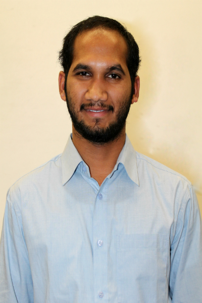

Our Leaders
CEO
-
Peter sedrak a natural leader with a record of delivering enhanced productivity. An Accomplished manager with 10+ years experience and a verifiable record of delivering enhanced productivity, streamlined operations, and improved financial performance. Peter was appointed as the CEO of Trunial ProServe in the year 2010, he has completed his Bachelors in Systems Analysis and Design from Purdue University and MBA – Management Technology from University of Phoenix. In 2004, he received the Professional Television Production Awards and the No Rework Award - Baldridge Quality Initiative. Prior to this job he has worked as Senior Change Problem Analyst in Health Care Service Corporation and Senior Database Analyst in ABN AMRO.
president
-
Naveen reddy bandadkunta currently works as the President of Trunial ProServe Technologies. As part of his previous works he has co – founded mindworkz where students where taught about new emerging technologies. Naveen has done his Bachelors in Computer Science from Jawaharlal Nehru Technological University, Hyderabad, India and Masters in IT from Valparaiso University, Indiana, USA. He has prior work experience in development and management and worked as a Director and Senior Director in Data Smart. Also co – founded Promaze Consulting Private limited and was appointed as Head of Marketing and Business Development.
vice presidents
-

abhilash gudipudi (VP operations) a motivated leader to communicate, build teams and aspire to be the best tech-savvy every day. Accomplished delivery of projects to clients on time and helped internal teams to be the best in Technology. Abhilash Gudipudi has technological skills in Devops, IT operations for 8+ years and was appointed as Vice President of Truinal ProServe in 2010. He has a Master degree in IT- Management from Valparaiso University and a Bachelor’s degree in Electrical Engineering from JNTU- Hyderabad. His continuous efforts to lead teams, interacting with every employees makes him stand out as the most admired employee within the organization on a personal scale.
-
Nishitha Yeluripati (VP Creative) appointed as the Vice President Creative to manage and deal all the companies development of websites and software creativity. She has graduated from Valparaiso University with a Masters in IT – Computing. Nishita completed her project in digital image processing for kinetic object which helped her pursue her career in the creative field and also worked in my different position for different organizations. Her leadership approach helped her achieve the current position she is in. She works with a team of creative people with many innovative and creative ideas which helps the organization to win many awards under her leadership.
-
Naga gopalapuram (VP ADMIN) has been appointed as the Vice President Admin of Trunial ProServe Corporation from the year 2015. After completing his Bachelor’s Degree from JNTU – Hyderabad, India in 2014 he went further to work with Tribio Soft Tech based in India for a almost one year. The role played by him was of an administrative officer and got promoted as the Administrative Manager in a very short span of time. In his current position as the Administrative Head, he serves as the lead for any official works involving external and internal projects such as Workforce, Networking, Database administration and Management.
business liaison
-
rincy susan mathew was elected as the Liaison for Trunial ProServe in the year 2015. Rincy has a more global experience of living, working and studying in different places throughout her life. She has completed her Bachelors in Computer Science and Engineering from Sathyabama University, Chennai, India and her Masters IT –Management Track from Valparaiso University, Indiana, USA. Also she has a previous work experience as an Operations Manager in RAKBANK, Dubai. As a student also Rincy was the cultural head for her university functions. All these managerial and communication skills have lead to her current position as the Liaison. She plays the prime role of the person who liaises between two teams or organizations and coordinate their activities.